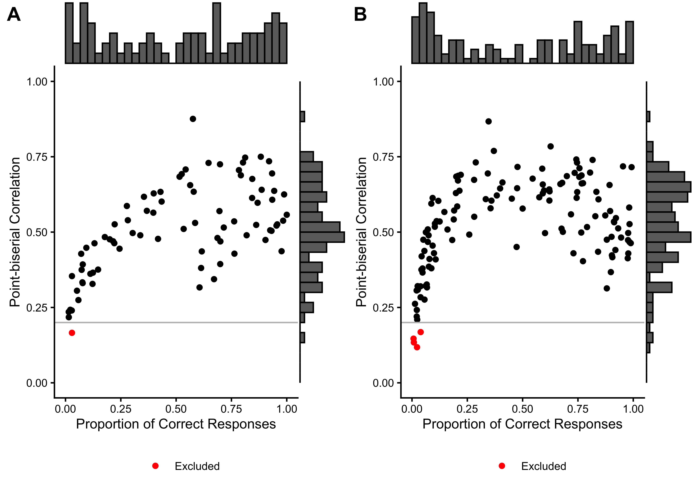
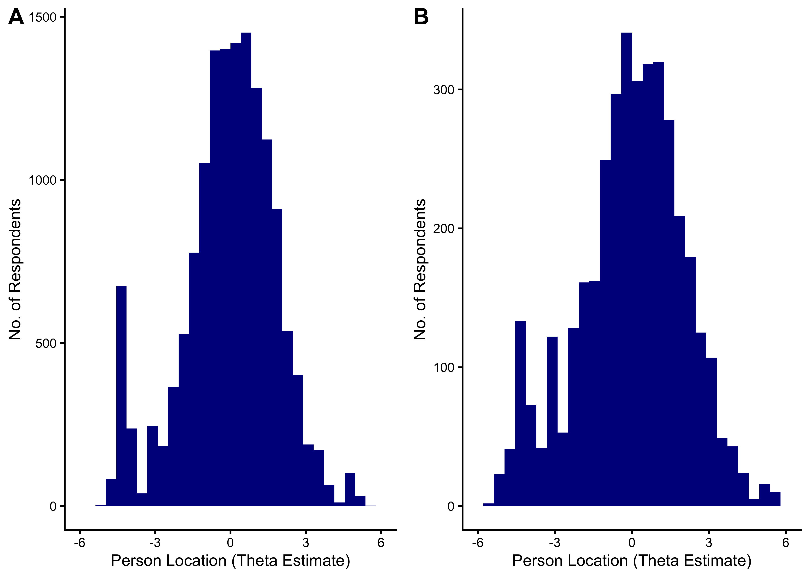
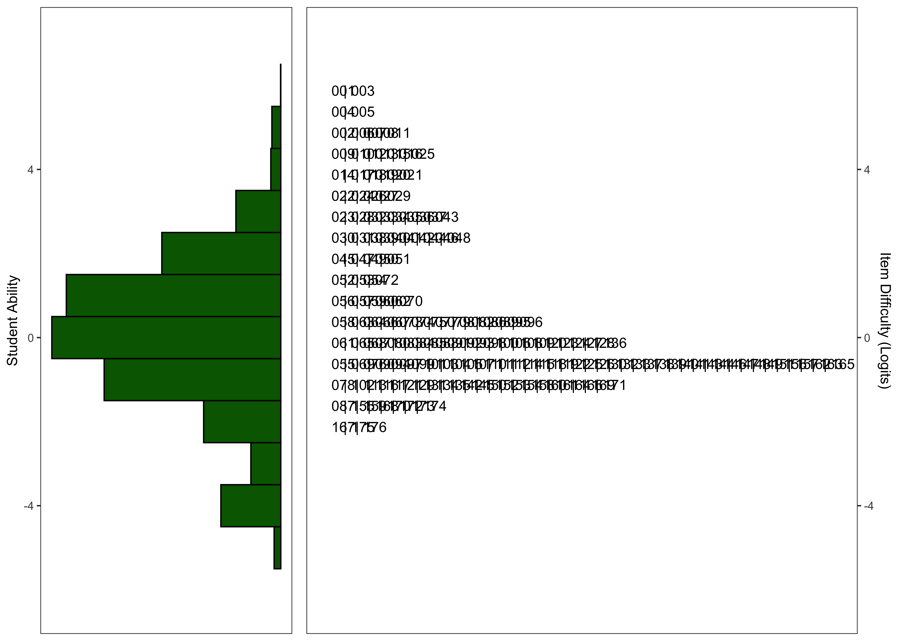
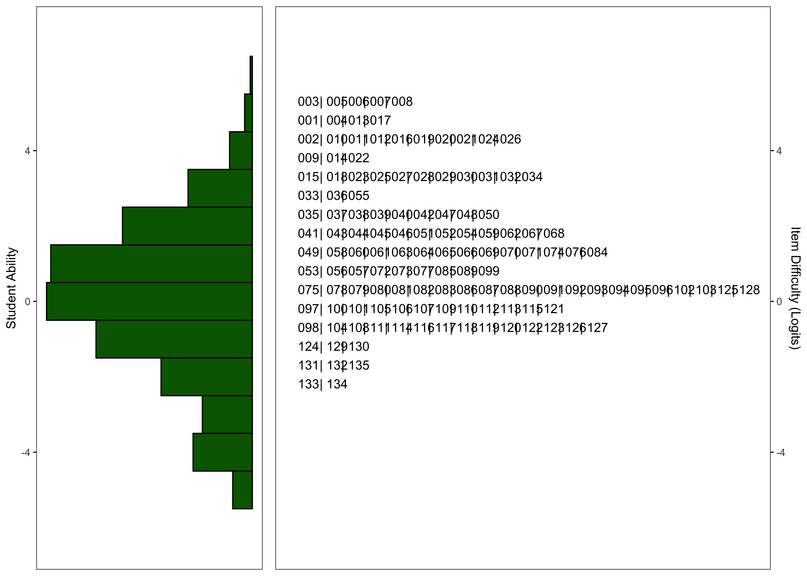

| Characteristic |
English
|
Spanish
|
||||
|---|---|---|---|---|---|---|
| K N = 4,438 |
G1 N = 5,286 |
G2 N = 4,536 |
K N = 1,201 |
G1 N = 1,278 |
G2 N = 1,439 |
|
| Timepoint | ||||||
| AY 2023/24 | 745 (17%) | 766 (14%) | 827 (18%) | 428 (36%) | 385 (30%) | 664 (46%) |
| AY 2024/25 | 764 (17%) | 1,073 (20%) | 701 (15%) | 480 (40%) | 533 (42%) | 499 (35%) |
| AY 2025/26 | 2,929 (66%) | 3,447 (65%) | 3,008 (66%) | 293 (24%) | 360 (28%) | 276 (19%) |
| Race | ||||||
| American/Alaskan Native | 56 (3.8%) | 65 (3.6%) | 29 (2.0%) | 34 (3.8%) | 37 (4.1%) | 25 (2.2%) |
| Asian | 134 (9.0%) | 174 (9.7%) | 141 (9.8%) | 25 (2.8%) | 29 (3.2%) | 21 (1.8%) |
| Black/African American | 157 (11%) | 199 (11%) | 181 (13%) | 9 (1.0%) | 10 (1.1%) | 8 (0.7%) |
| Not reported | 234 (16%) | 283 (16%) | 243 (17%) | 364 (40%) | 382 (42%) | 618 (53%) |
| Other | 352 (24%) | 271 (15%) | 147 (10%) | 223 (25%) | 112 (12%) | 63 (5.4%) |
| White | 548 (37%) | 802 (45%) | 700 (49%) | 246 (27%) | 336 (37%) | 425 (37%) |
| Unknown | 2,957 | 3,492 | 3,095 | 300 | 372 | 279 |
| Ethnicity | ||||||
| Hispanic/Latin(o/a) | 923 (68%) | 1,201 (68%) | 917 (64%) | 785 (96%) | 854 (96%) | 1,088 (96%) |
| Intentional nonreport | 14 (1.0%) | 5 (0.3%) | 3 (0.2%) | 4 (0.5%) | 2 (0.2%) | 2 (0.2%) |
| Not Hispanic/Latin(o/a) | 422 (31%) | 550 (31%) | 508 (36%) | 32 (3.9%) | 36 (4.0%) | 49 (4.3%) |
| Unknown | 3,079 | 3,530 | 3,108 | 380 | 386 | 300 |
| Gender | ||||||
| Female | 678 (49%) | 905 (52%) | 705 (50%) | 414 (50%) | 467 (54%) | 609 (53%) |
| Male | 692 (51%) | 824 (48%) | 719 (50%) | 406 (50%) | 399 (46%) | 532 (47%) |
| Non-binary | 0 (0%) | 0 (0%) | 0 (0%) | 0 (0%) | 0 (0%) | 1 (<0.1%) |
| Unknown | 3,068 | 3,557 | 3,112 | 381 | 412 | 297 |
| Home Language | ||||||
| English | 809 (56%) | 1,015 (59%) | 890 (65%) | 68 (7.6%) | 70 (7.7%) | 103 (8.9%) |
| Spanish | 562 (39%) | 633 (36%) | 384 (28%) | 819 (92%) | 832 (92%) | 1,042 (90%) |
| Other | 83 (5.7%) | 87 (5.0%) | 99 (7.2%) | 6 (0.7%) | 2 (0.2%) | 9 (0.8%) |
| Unknown | 2,984 | 3,551 | 3,163 | 308 | 374 | 285 |
| English Proficiency Label | ||||||
| (Re-)Classified Proficient | 67 (5.2%) | 117 (7.0%) | 114 (8.4%) | 69 (8.6%) | 99 (11%) | 190 (17%) |
| English Learner | 519 (40%) | 580 (35%) | 369 (27%) | 684 (86%) | 705 (82%) | 831 (74%) |
| English-only | 710 (55%) | 966 (58%) | 872 (64%) | 46 (5.8%) | 60 (6.9%) | 100 (8.9%) |
| Unknown | 3,142 | 3,623 | 3,181 | 402 | 414 | 318 |
| Ever IEP/504 | 89 (7.6%) | 152 (10%) | 140 (12%) | 67 (9.2%) | 75 (9.8%) | 86 (10%) |
| Unknown | 3,266 | 3,798 | 3,404 | 472 | 511 | 607 |
23 Sentence Repetition
23.1 Task Description
Children listen to audio-recorded sentences and are prompted to repeat each sentence verbatim.
23.2 Construct
The Sentence Repetition task measures a child’s ability to recall and reproduce sentences of varying length and complexity. This task taps into syntactic processing, lexical knowledge, and verbal working memory.
23.3 Item Development
23.3.1 English
Sentences varied by:
- Vocabulary: simpler, familiar vocabulary was used for easier items, while less frequent, complex vocabulary was used for harder items.
- Sentence length: sentences ranged from 4 to 12 words.
- Targets: one or two clauses were targeted by sentence. The targets varied by language. We selected target structures that have been shown to identify struggling readers and/or language difficulties in English. The following targets were used: article-noun, negative, passive, past, plural, possessive, prepositional phrase, question inversions, relative clause, and third person singular.
23.3.2 Spanish
Sentences varied by:
- Vocabulary: simpler, familiar vocabulary was used for easier items, while less frequent, complex vocabulary was used for harder items.
- Sentence length: sentences ranged from 4 to 12 words.
- Targets: one or two clauses were targeted by sentence. The following targets were used: adjective agreement, article, conditional, direct object clitic, imperfect past, negative, preposition, preterite past, progressive, reflexive, relative clause, and subjunctive.
23.4 Scoring
Items were polytomously scored according to the following scoring scheme: 2: The sentence was fully repeated without any error. 1: The sentence was repeated with 2 or less errors. 0: The sentence was repeated with 3 or more errors.
23.5 Calibration Samples
23.6 Psychometric Analysis
23.6.1 Basic Item Statistics
We excluded 0 items from the English task and 38 items from the Spanish task based on low response counts (n < 100) prior to IRT calibration. 7 items were excluded because they had no variance in the Spanish task, and 0 items in the English task. Additionally, we excluded 1 items from the English task and 4 items from the Spanish task based on low point-biserial correlations (r < 0.2). Table 23.2 summarizes the basic item characteristics, Figure 23.1 shows the relationship between point-biserial correlations and the proportion of correct responses for each item.
English
|
Spanish
|
|||
|---|---|---|---|---|
| Characteristic |
Before Excl.
|
After Excl.
|
Before Excl.
|
After Excl.
|
| N = 177 | N = 176 | N = 175 | N = 135 | |
| No. of Responses | 746 (1,117) | 749 (1,120) | 275 (215) | 338 (205) |
| Proportion Correct | 0.92 (0.46) | 0.93 (0.45) | 0.60 (0.45) | 0.69 (0.40) |
| Point-biserial Correlation | 0.62 (0.16) | 0.62 (0.16) | 0.53 (0.15) | 0.55 (0.13) |
| Excluded (n < 100) | 0 (0%) | 0 (0%) | 38 (22%) | 0 (0%) |
| Excluded (pbis < .2) | 1 (0.6%) | 0 (0%) | 4 (2.4%) | 0 (0%) |
| Excluded (no variation) | 0 (0%) | 0 (0%) | 7 (4.0%) | 0 (0%) |

23.6.2 Rasch Analysis
23.6.2.1 Item Fit Statistics
| A | B | C | D | Total | A | B | C | D | Total | |
|---|---|---|---|---|---|---|---|---|---|---|
| Outfit MSE | ||||||||||
| A | 154 | 0 | 0 | 0 | 154 | 118 | 0 | 0 | 0 | 118 |
| B | 11 | 0 | 0 | 0 | 11 | 18 | 0 | 0 | 0 | 18 |
| C | 9 | 0 | 0 | 0 | 9 | 0 | 0 | 0 | 0 | 0 |
| D | 3 | 0 | 0 | 0 | 3 | 1 | 0 | 0 | 0 | 1 |
| Total | 177 | 0 | 0 | 0 | 177 | 137 | 0 | 0 | 0 | 137 |
23.6.2.2 Person Fit Statistics
| A | B | C | D | Total | A | B | C | D | Total | |
|---|---|---|---|---|---|---|---|---|---|---|
| Outfit MSE | ||||||||||
| A | 8,489 | 116 | 140 | 3 | 8,748 | 1,920 | 17 | 75 | 13 | 2,025 |
| B | 1,043 | 4,132 | 0 | 0 | 5,175 | 396 | 1,198 | 1 | 1 | 1,596 |
| C | 194 | 5 | 157 | 17 | 373 | 41 | 0 | 59 | 4 | 104 |
| D | 114 | 1 | 83 | 192 | 390 | 28 | 0 | 17 | 50 | 95 |
| Total | 9,840 | 4,254 | 380 | 212 | 14,686 | 2,385 | 1,215 | 152 | 68 | 3,820 |
23.6.2.3 Distribution of Theta Estimates

23.6.2.4 Wright Maps


23.6.2.5 Model Summary
| Characteristic | N = 177 | N = 14,686 | N = 137 | N = 3,820 |
|---|---|---|---|---|
| deltaj1 | 0.54 (1.97) | 1.12 (2.18) | ||
| deltaj2 | 0.69 (1.96) | 1.71 (1.65) | ||
| Unknown | 7 | 11 | ||
| Outfit | 0.92 (0.34) | 0.63 (0.41, 0.88) | 0.89 (0.31) | 0.59 (0.33, 0.90) |
| Infit | 0.96 (0.14) | 0.71 (0.46, 0.97) | 0.99 (0.11) | 0.69 (0.42, 0.99) |
| Reliability of Separation | 0.8800 | 0.8286 | 0.8909 | 0.8400 |
| Logit Scale Location | 0.12 (-1.02, 1.18) | 0.11 (-1.20, 1.36) |
23.6.3 Final Number of Items
Following the IRT calibration (before which we had already excluded all items with point-biserial correlations < .20 and < 100 responses), we applied the following additional item classification:
- Items with good fit statistics (infit or outfit \(\leq 1.5\)) and a sufficiently large response count (\(\geq\) 120 for English, \(\geq\) 100 for Spanish) were retained as part of the final item pool.
- Items with poor fit statistics (infit or outfit \(> 1.5\)) and a sufficiently large (\(\geq\) 120 for English, \(\geq\) 100 for Spanish) response count were discarded.
- Items with lower response counts than specified above were kept as experimental items (meaning they will be administered as part of the task but will not influence the final score).
Therefore, the English task currently has 172 operational and 4 experimental items, the Spanish task currently has 134 operational and 1 experimental items. ## Criterion Validity Evidence
23.6.4 Sample
| Characteristic |
English
|
Spanish
|
||||
|---|---|---|---|---|---|---|
| K N = 269 |
G1 N = 244 |
G2 N = 209 |
K N = 244 |
G1 N = 228 |
G2 N = 266 |
|
| Timepoint | ||||||
| AY 2023/24 | 269 (100%) | 244 (100%) | 209 (100%) | 244 (100%) | 228 (100%) | 266 (100%) |
| Race | ||||||
| American/Alaskan Native | 5 (1.9%) | 3 (1.2%) | 1 (0.5%) | 2 (0.8%) | 4 (1.8%) | 4 (1.5%) |
| Asian | 36 (14%) | 37 (15%) | 9 (4.7%) | 8 (3.3%) | 2 (0.9%) | 0 (0%) |
| Black/African American | 29 (11%) | 33 (14%) | 34 (18%) | 1 (0.4%) | 0 (0%) | 0 (0%) |
| Not reported | 31 (12%) | 32 (13%) | 13 (6.8%) | 133 (55%) | 155 (69%) | 172 (65%) |
| Other | 73 (27%) | 49 (20%) | 3 (1.6%) | 41 (17%) | 8 (3.6%) | 18 (6.8%) |
| White | 92 (35%) | 90 (37%) | 131 (69%) | 57 (24%) | 55 (25%) | 70 (27%) |
| Unknown | 3 | 0 | 18 | 2 | 4 | 2 |
| Ethnicity | ||||||
| Hispanic/Latin(o/a) | 110 (41%) | 99 (41%) | 125 (60%) | 220 (91%) | 212 (93%) | 249 (98%) |
| Intentional nonreport | 8 (3.0%) | 2 (0.8%) | 0 (0%) | 1 (0.4%) | 0 (0%) | 2 (0.8%) |
| Not Hispanic/Latin(o/a) | 151 (56%) | 143 (59%) | 83 (40%) | 20 (8.3%) | 16 (7.0%) | 2 (0.8%) |
| Unknown | 0 | 0 | 1 | 3 | 0 | 13 |
| Gender | ||||||
| Female | 133 (49%) | 115 (47%) | 101 (48%) | 130 (53%) | 111 (49%) | 137 (52%) |
| Male | 136 (51%) | 129 (53%) | 108 (52%) | 114 (47%) | 117 (51%) | 129 (48%) |
| Home Language | ||||||
| English | 197 (75%) | 183 (75%) | 131 (82%) | 30 (12%) | 24 (11%) | 23 (8.7%) |
| Spanish | 34 (13%) | 26 (11%) | 24 (15%) | 209 (87%) | 199 (89%) | 240 (91%) |
| Other | 33 (13%) | 34 (14%) | 5 (3.1%) | 2 (0.8%) | 1 (0.4%) | 1 (0.4%) |
| Unknown | 5 | 1 | 49 | 3 | 4 | 2 |
| English Proficiency Label | ||||||
| (Re-)Classified Proficient | 11 (4.9%) | 19 (7.9%) | 11 (6.9%) | 31 (14%) | 25 (11%) | 43 (18%) |
| English Learner | 51 (23%) | 42 (18%) | 18 (11%) | 186 (81%) | 176 (80%) | 178 (73%) |
| English-only | 161 (72%) | 178 (74%) | 131 (82%) | 12 (5.2%) | 20 (9.0%) | 23 (9.4%) |
| Unknown | 46 | 5 | 49 | 15 | 7 | 22 |
| Ever IEP/504 | 20 (9.8%) | 24 (12%) | 19 (12%) | 20 (9.3%) | 23 (11%) | 16 (12%) |
| Unknown | 65 | 50 | 49 | 30 | 14 | 127 |
English Sentence Repetition was correlated with the Sentence Repetition subtest from the Woodcock-Johnson IV (WJ IV OL) test (Schrank, McGrew, and Mather 2014). Spanish Sentence Repetition was correlated with the Recordando Oraciones subtest from the Clinical Evaluation of Language Fundamentals, 4th Edition, Spanish (CELF 4 Spanish) test (Semel et al. 2006).
| Grade | n | r [CI] | n | r [CI] | n | r [CI] |
|---|---|---|---|---|---|---|
| K | 269 | 0.52 [0.43, 0.60] | 51 | 0.55 [0.33, 0.72] | 244 | 0.67 [0.60, 0.74] |
| G1 | 244 | 0.48 [0.38, 0.57] | 42 | 0.59 [0.34, 0.76] | 228 | 0.79 [0.74, 0.84] |
| G2 | 209 | 0.75 [0.68, 0.80] | NA | NA | 266 | 0.69 [0.62, 0.75] |